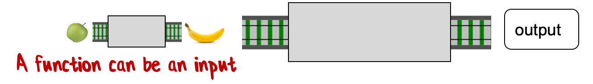

Multiple items val int : value:'T -> int (requires member op_Explicit)
Full name: Microsoft.FSharp.Core.Operators.int
-------------------- type int = int32
Full name: Microsoft.FSharp.Core.int
-------------------- type int<'Measure> = int
Full name: Microsoft.FSharp.Core.int<_>
Multiple items type AllowNullLiteralAttribute = inherit Attribute new : unit -> AllowNullLiteralAttribute new : value:bool -> AllowNullLiteralAttribute member Value : bool
Full name: Microsoft.FSharp.Core.AllowNullLiteralAttribute
-------------------- new : unit -> AllowNullLiteralAttribute new : value:bool -> AllowNullLiteralAttribute
Multiple items val double : value:'T -> double (requires member op_Explicit)
Full name: Microsoft.FSharp.Core.ExtraTopLevelOperators.double
-------------------- type double = System.Double
Full name: Microsoft.FSharp.Core.double
val printfn : format:Printf.TextWriterFormat<'T> -> 'T
Full name: Microsoft.FSharp.Core.ExtraTopLevelOperators.printfn
type 'T list = List<'T>
Full name: Microsoft.FSharp.Collections.list<_>
Multiple items module List
from Microsoft.FSharp.Collections
-------------------- type List<'T> = | ( [] ) | ( :: ) of Head: 'T * Tail: 'T list interface IEnumerable interface IEnumerable<'T> member GetSlice : startIndex:int option * endIndex:int option -> 'T list member Head : 'T member IsEmpty : bool member Item : index:int -> 'T with get member Length : int member Tail : 'T list static member Cons : head:'T * tail:'T list -> 'T list static member Empty : 'T list
Full name: Microsoft.FSharp.Collections.List<_>
val fold : folder:('State -> 'T -> 'State) -> state:'State -> list:'T list -> 'State
Full name: Microsoft.FSharp.Collections.List.fold
Multiple items val decimal : value:'T -> decimal (requires member op_Explicit)
Full name: Microsoft.FSharp.Core.Operators.decimal
-------------------- type decimal = System.Decimal
Full name: Microsoft.FSharp.Core.decimal
-------------------- type decimal<'Measure> = decimal
Full name: Microsoft.FSharp.Core.decimal<_>
Introduction to F# and functional programming for the C# developer
publicclass Person =public Person(string name, DateTime birthday) =
_name = name;
_birthday = birthday;
privatereadonlystring _name;
privatereadonly DateTime _birthday;
publicstring Name =
get { return _name; }
public DateTime Birthday =
get { return _birthday; }
Shift up to use less vertical space
1: 2: 3: 4: 5: 6: 7: 8: 9: 10: 11: 12: 13: 14:
publicclass Person =public Person(string name, DateTime birthday) =
_name = name;
_birthday = birthday;
privatereadonlystring _name;
privatereadonly DateTime _birthday;
publicstring Name =
get { return _name; }
public DateTime Birthday =
get { return _birthday; }
Python's use of whitespace stopped feeling unnatural after about twenty
minutes. I just indented code, pretty much as I would have done in a C
program anyway, and it worked - Eric S. Raymond
Automatically create backing fields from constructor parameters
publicclass Person =// constructor arguments match the private fieldspublic Person(string name, DateTime birthday) =// arguments values are assigned to backing fields
_name = name;
_birthday = birthday;
// private fields declaredprivatereadonlystring _name;
privatereadonly DateTime _birthday;
publicstring Name =// field value finally returned
get { return _name; }
public DateTime Birthday =// field value finally returned
get { return _birthday; }
We have to repeat the type? Can't the compiler figure it out?
1: 2: 3: 4: 5: 6: 7: 8: 9:
classPerson(stringname, DateTimebirthday) =// it's a string, we know from the constructor stringName=name// and this one, it ought to be a DateTimeDateTimeBirthday=birthday
// all C-derivative languages use type-then-name syntaxclassPerson(stringname, DateTimebirthday) =memberthis.Name=namememberthis.Birthday=birthdaymemberthis.Age() =vardaysDiff=DateTime.Today.Subtract(birthday).DaysdaysDiff/365
In F#, types come after name
1: 2: 3: 4: 5: 6: 7: 8: 9: 10: 11: 12:
// most modern languages adopt type-then-name insteadclassPerson(name:string, birthday:DateTime) =memberthis.Name=namememberthis.Birthday=birthdaymemberthis.Age() =vardaysDiff=DateTime.Today.Subtract(birthday).DaysdaysDiff/365
Different keywords
In C#, we use 'class' and 'var'
1: 2: 3: 4: 5: 6: 7: 8: 9: 10: 11: 12: 13:
// 'class' identifies - you guessed it - a classclassPerson(name:string, birthday:DateTime) =memberthis.Name=namememberthis.Birthday=birthdaymemberthis.Age() =// 'var' is C#'s type-inference declarationvardaysDiff=DateTime.Today.Subtract(birthday).DaysdaysDiff/365
In F#, we use 'type' and 'let'
1: 2: 3: 4: 5: 6: 7: 8: 9: 10: 11: 12: 13:
// 'type' identifies - you guessed it again! - F# typestypePerson(name:string, birthday:DateTime) =memberthis.Name=namememberthis.Birthday=birthdaymemberthis.Age() =// 'let' is how you declare stuff in F#'sletdaysDiff=DateTime.Today.Subtract(birthday).DaysdaysDiff/365
Modern C# equivalent with auto-properties and expression-bodied members
1: 2: 3: 4: 5: 6: 7: 8: 9: 10: 11:
classPerson(stringname, DateTimebirthday)
{
publicstringName { get; } =name;
publicDateTimeBirthday { get; } =birthday;
publicintAge() =>DateTime.Today.Subtract(birthday).Days/365;
}
// Actually, this does not work. Primary constructors was // a short-lived feature that only existed in VS2014
surprising similar
not a coincidence
Functional approach: separate the data from the functions
1: 2: 3: 4: 5: 6: 7: 8: 9: 10: 11:
typePerson= {
Name:stringBirthday:DateTime
}
letageperson=letdaysDiff=DateTime.Today.Subtract(person.Birthday).DaysdaysDiff/365// age : Person -> int // (the inferred type of the function)
Observation
Syntax is never the most important thing about a programming language. But...
21 lines of code has shrunk to 5 lines of code
You write 1/3 as much code
Type inference
1: 2: 3: 4: 5:
letdoSomethingfx=lety=f (x+1)
"hello"+y// two parameters: f & x
1: 2: 3:
letdoSomethingfx=lety=f (x+1) // x must be an int"hello"+y
1: 2: 3:
letdoSomethingfx=lety=f (x+1)
"hello"+y// y must be a string
1: 2: 3:
letdoSomethingfx=lety=f (x+1) // f must be a int -> string function"hello"+y
Inferred type of doSomething
1: 2: 3: 4: 5:
f:(int->string) ->x:int->string// 'f' is a function, it takes an int and returns a string;// 'x' is an int;// return value is a string
typePerson= {
Name:stringBirthday:DateTime
}
letalice= {Name="Alice"; Birthday=DateTime(1980,1,1)} // OK
Different philosophy
Different philosophy
C# historically comes from C-like approach
F# come from ML, a MetaLanguage for proving things
Goal: Predictable code
Can you understand the code using only the information that you have right in front of you?
You're not allowed to delve into other parts of the codebase.
Tricky question
1: 2: 3: 4:
varx=1;
DoSomething(x);
vary="hello"+x; // What value is y?
1:
// The answer is "hello world".
Tricky question
1: 2: 3: 4: 5: 6: 7: 8:
functionDoSomething (foo) { x="world"; }
varx=1;
DoSomething(x);
vary="hello"+x;
// The code is actually JavaScript.
1:
// Thanks to static typing, this can never happen in C#.
Predictable language
Variables should not be allowed to change their type
1: 2: 3: 4: 5:
// create two customersvarcust1=newCustomer(99, "J Smith");
varcust2=newCustomer(99, "J Smith");
cust1==cust2; // true or false?
1:
// You can't tell. Not predictable.
Predictable language
Variables should not be allowed to change their type
Objects with the same values should be equal by default.
1: 2: 3: 4: 5:
// create a customer and an ordervarcust=newCustomer(99, "J Smith");
varorder=newOrder(99, "J Smith");
cust.Equals(order); // true or false?
1: 2:
// This is probably a bug.// Why are you attempting to compare an order to a customer?
Predictable language
Variables should not be allowed to change their type
Objects with the same values should be equal by default.
Comparing objects of different types is a compile-time error.
1: 2: 3: 4:
// create a customervarcust=newCustomer();
Console.WriteLine(cust.Address.Country) // what is the expected output?
1: 2:
// You can't tell. Not predictable.// What if Address is not always required?
Predictable language
Variables should not be allowed to change their type
Objects with the same values should be equal by default.
Comparing objects of different types is a compile-time error.
Objects must always be initialized to a valid state. Not doing so is a compile-time error.
1: 2: 3: 4: 5: 6: 7: 8: 9: 10: 11:
// create a customervarcust=newCustomer(99, "J Smith");
// add it to a setvarprocessedCustomers=newHashSet<Customer>();
processedCustomers.Add(cust);
// process itProcessCustomer(cust);
processedCustomers.Contains(cust); // true or false?
1: 2:
// You can't tell. Not predictable.// If ProcessCustomer mutates the customer, it might change the hash
1: 2: 3: 4: 5: 6: 7: 8: 9: 10: 11:
// create a customervarcust=newImmutableCustomer(99, "J Smith");
// add it to a setvarprocessedCustomers=newHashSet<ImmutableCustomer>();
processedCustomers.Add(cust);
// process it and return the changesvarchangedCustomer=ProcessCustomer(cust);
processedCustomers.Contains(cust); // true or false?
1: 2: 3:
// true.// Immutability forces changed values to be returned explicitly.// Original value unchanged.
Predictable language
Variables should not be allowed to change their type
Objects with the same values should be equal by default.
Comparing objects of different types is a compile-time error.
Objects must always be initialized to a valid state. Not doing so is a compile-time error.
Once created, objects and collections must be immutable.
1: 2: 3: 4: 5: 6: 7:
// create a repositoryvarrepo=newCustomerRepository();
// find a customer by idvarcustomer=repo.GetById(42);
Console.WriteLine(customer.Id); // what is the expected output?
1: 2: 3:
// You can't tell. Not predictable.// What happens if the customer is missing?// Is the customer null or what?
1: 2: 3: 4: 5: 6: 7: 8: 9: 10: 11: 12: 13: 14:
// create a repositoryvarrepo=newCustomerRepository();
// find a customer by idvarcustomerOrError=repo.GetById(42);
// handle both casesif (customerOrError.IsCustomer)
Console.WriteLine(customerOrError.Customer.Id);
if (customerOrError.IsError)
Console.WriteLine(customerOrError.ErrorMessage);
// Instead, build error cases into the return type.
Predictable language
Variables should not be allowed to change their type
Objects with the same values should be equal by default.
Comparing objects of different types is a compile-time error.
Objects must always be initialized to a valid state. Not doing so is a compile-time error.
Once created, objects and collections must be immutable.
Missing data or errors must be made explicit. No nulls allowed.
Predictable language
Variables should not be allowed to change their type
Objects with the same values should be equal by default.
Comparing objects of different types is a compile-time error.
Objects must always be initialized to a valid state. Not doing so is a compile-time error.
Once created, objects and collections are generally immutable.
Missing data or errors are generally made explicit. Nulls are a code smell.
Predictable language
F# is not perfect. But conventions lead this way.
Functional first
Core principles of functional programming
Functions
Composition
Parameterization
Principle
Functions are things
Functions are standalone things
Hence, they are not attached to a class

Functions can be used for inputs and outputs of other functions
From this simple foundation we can build complex things
add15// = 6double (add15) // = 12square (double (add15)) // = 144// Standard way of nesting function calls can be confusing if too deep
Piping in F# (|>)
1: 2: 3: 4: 5: 6:
5|>add1// = 65|>add1|>double// = 125|>add1|>double|>square// = 144// Pipe operator pipes a value through a set of functions // in sequence and returns the resulting value
Piping in C# (if we really wanted to)
1: 2: 3: 4: 5: 6: 7: 8: 9:
Func<int, int> Add1= x => x +1;
Func<int, int> Double = x => x + x;
Func<int, int> Square = x => x * x;
5.Pipe(Add1); // = 65.Pipe(Add1).Pipe(Double); // = 125.Pipe(Add1).Pipe(Double).Pipe(Square); // = 144// Pipe() is a helper method we have to write ourselves
Why we say F# is "functional first"
F# makes functional programming easy
C# makes FP possible
but it's awkward and not idiomatic
Principle
Parameterization
1: 2: 3:
letprintList() =foriin [1..10] doprintfn"the number is %i"
1:
// [1..10] is hard-coded data. Yuck!
1: 2: 3:
letprintListaList=foriinaListdoprintfn"the number is %i"i
1: 2:
// It's second nature to parameterize the data input// However...
1: 2: 3: 4: 5: 6:
letprintListaList=foriinaListdoprintfn"the number is %i"i// Hard-coded behaviour. Yuck!// FPers would parameterize the action as well.
1: 2: 3:
letprintListanActionaList=foriinaListdoanActioni
1: 2:
// We've decoupled the behavior from the data. // Any list, any action!
letfoldactioninitialValuelist=letmutabletotalSoFar=initialValueforiteminlistdototalSoFar<-actiontotalSoFaritemtotalSoFar// Initial value dealt with;// Common code extracted;// Parameterized action;
1: 2: 3: 4: 5: 6: 7: 8: 9: 10: 11: 12: 13:
letproductn=letinitialValue=1letactionproductSoFarx=productSoFar*x
[1..n] |>List.foldactioninitialValueletsumn=letinitialValue=0letactionsumSoFarx=sumSoFar+x
[1..n] |>List.foldactioninitialValue// Lots of collections functions like this:// "fold", "map", "reduce", "collect", etc.
Principle
Algebraic type system
F# types can be composed
New types are build from smaller types using:
AND
OR
Types are executable documentation
1: 2: 3: 4: 5: 6: 7: 8:
typeFruitSalad= {
Apple:AppleVarietyBanana:BananaVarietyCherry:CherryVariety
}
// FruidSalad = One each of Apple and Banana and Cherry// Example: pairs, tuples, records (not yet available in C#)
1: 2: 3: 4: 5: 6: 7:
typeSnack=
| AppleofAppleVariety
| BananaofBananaVariety
| CherryofCherryVariety// Snack = Apple or Banana or Cherry// Not available in C#
We accept three forms of payment: Check, Cash, Card.
For Cash we don't need any extra information
For Checks we need a check number
For Cards we need a card type and card number
How would you implement this?
1: 2: 3: 4: 5: 6: 7: 8: 9: 10: 11: 12: 13:
// Possible C# implementationinterface IPaymentMethod
{..}
class Cash() : IPaymentMethod
{..}
class Check(int checkNo): IPaymentMethod
{..}
class Card(string cardType, string cardNo) : IPaymentMethod
{..}
1: 2: 3: 4: 5: 6: 7: 8: 9: 10: 11: 12:
// Possible F# implementationtype CheckNumber = int // primitive typetype CardNumber = string // primitive typetype CardType = Visa | Mastercard // OR typetype CreditCardInfo = CardType * CardNumber // AND typetype PaymentMethod = // OR type| Cash
| Check of CheckNumber // can you guess which payment | Card of CreditCardInfo // methods are accepted?
1: 2: 3: 4: 5: 6: 7: 8: 9: 10: 11: 12: 13: 14:
typePaymentAmount=decimal// primitive typetypeCurrency=EUR | USD// OR typetypePayment= { // final type built from many smaller typesAmount:PaymentAmountCurrency:CurrencyMethod:PaymentMethod
}
letpayment= { // usage exampleAmount=PaymentAmount100.0;
Currency=EUR;
Method=Check9912345
}